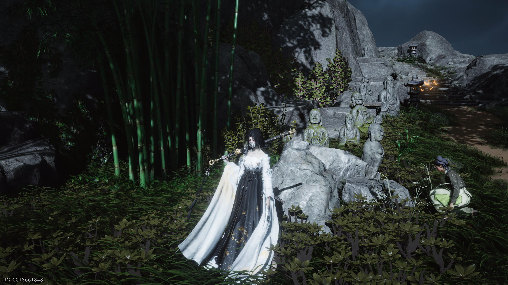
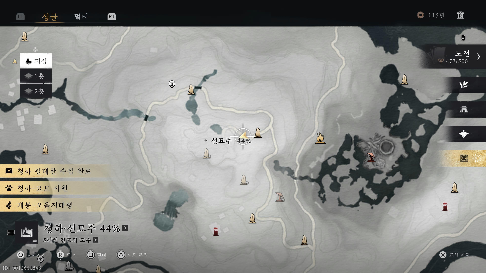
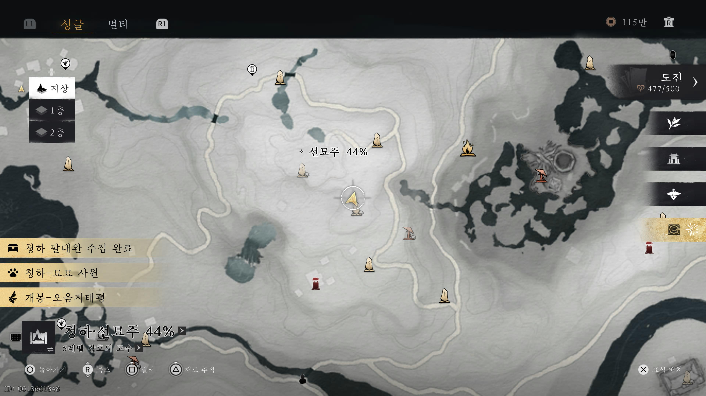
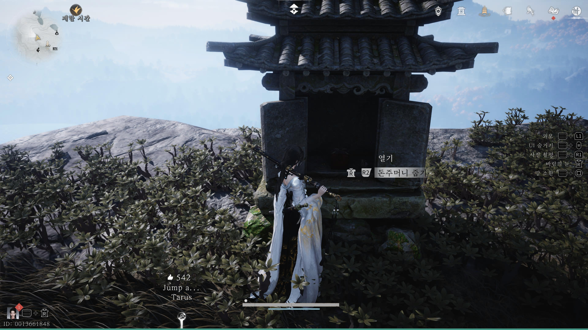
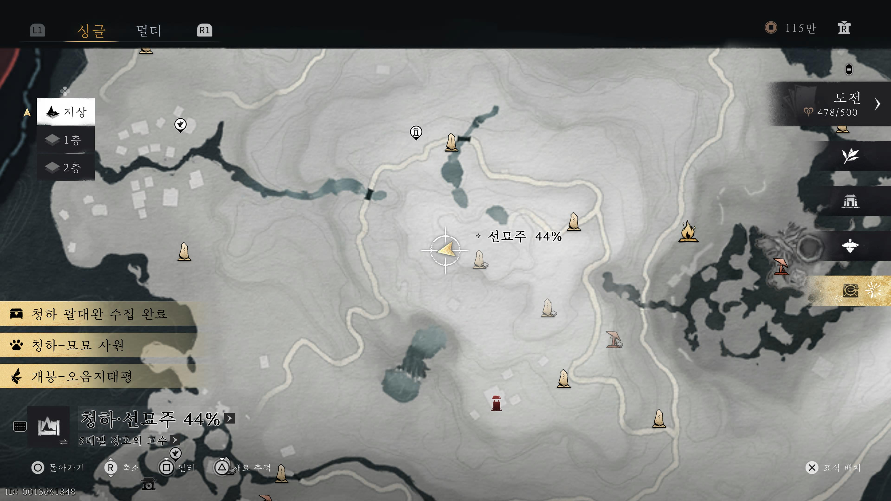
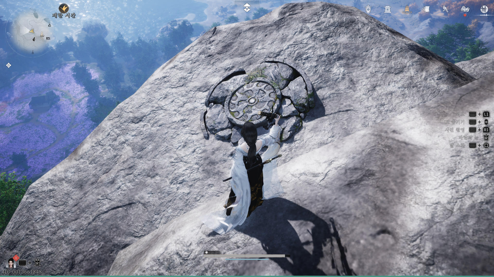
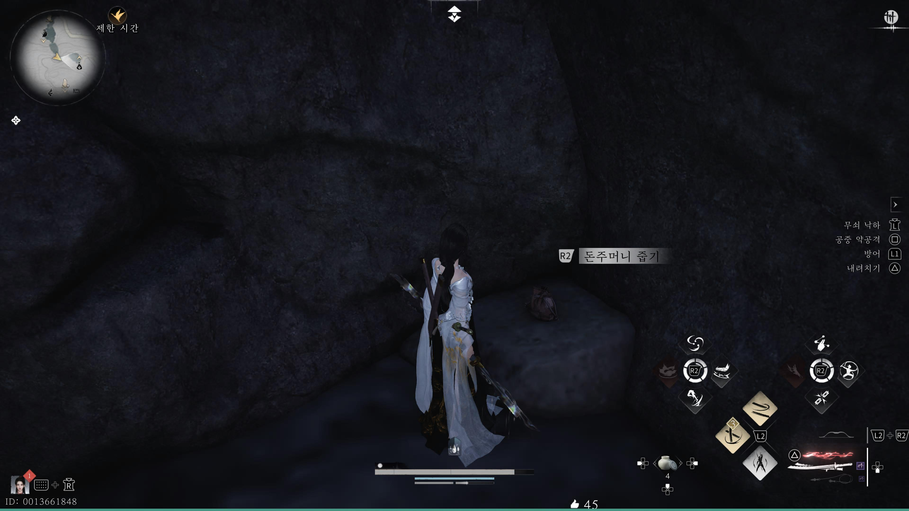
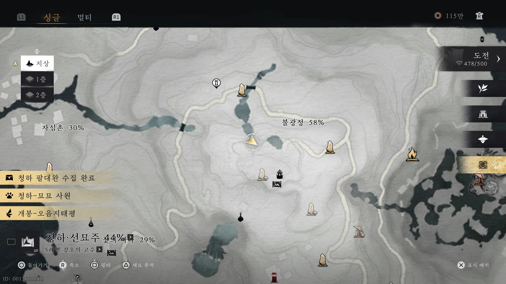

만사록
액막이 돈주머니
한 부인이 찾고 있는 물건 찾아주기
📜 퀘스트 개요
사기꾼에게 속아 전 재산을 액막이 주머니에 담아버린 남편.
곽씨 부인을 위해 흩어진 세 개의 주머니를 찾아와야 합니다.
곽씨 부인과의 만남
아래 위치에 있는 곽씨 부인과 대화하세요.
그녀는 남편이 잃어버린 액막이 주머니들을 찾아달라고 간곡히 부탁합니다.


첫 번째 주머니: 산적 소굴
아래 위치로 이동하여 산적들을 처치하세요.
첫 번째 주머니는 고기가 걸려있는 장대 아래에 있습니다.


두 번째 주머니: 산 정상 신사
산 정상에 있는 신사로 이동하세요. 신사 문이 닫혀있다면 여는 장치를 찾아야 합니다.
💡 문 여는 법: 신사 왼쪽 절벽 아래에 있는 버튼 위에서 점프 + 내려찍기 공격을 하면 문이 열립니다.



세 번째 주머니: 덩굴 동굴
두 번째 주머니를 얻은 곳(신사)에서 절벽 아래로 내려가세요.
덩굴로 가려진 숨겨진 동굴이 있습니다. 불화살로 덩굴을 태우고 들어가면 마지막 주머니를 얻을 수 있습니다.


세 개의 주머니를 모두 모아 곽씨 부인에게 돌아가면
퀘스트는 완료됩니다.